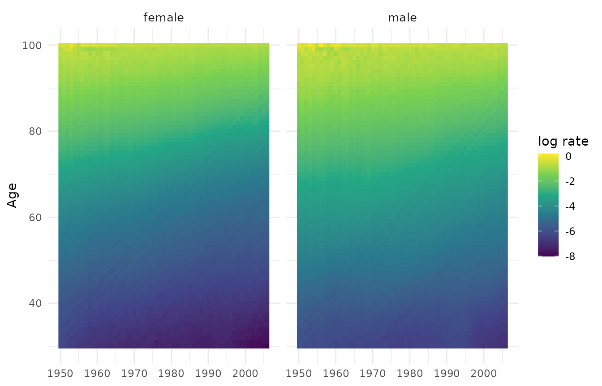
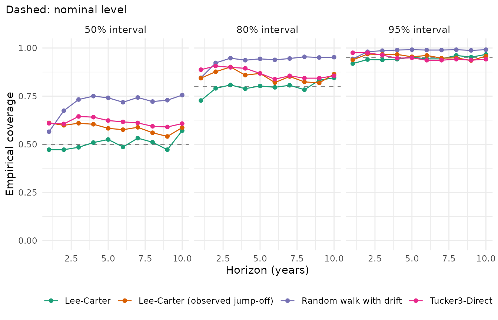
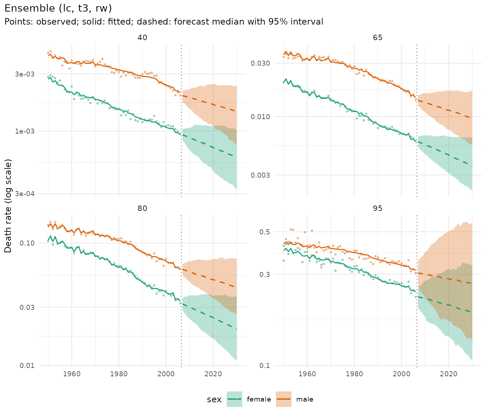
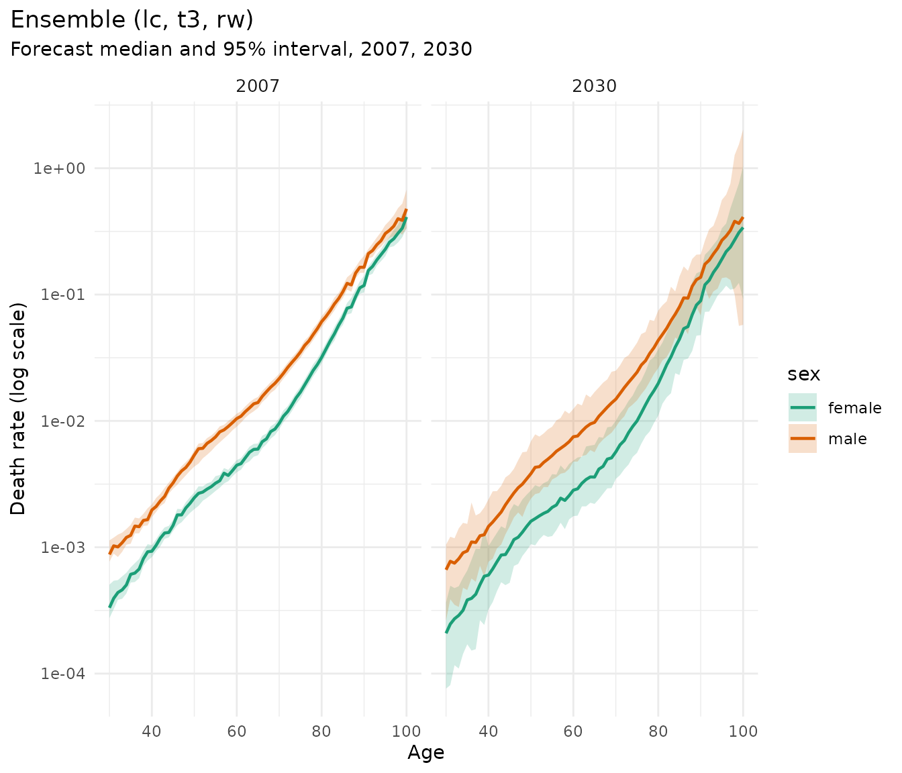
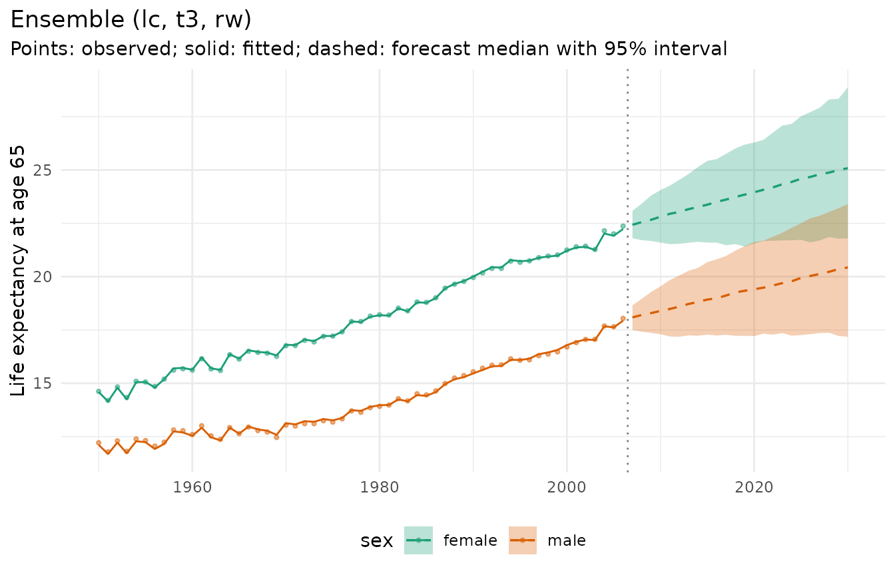

This vignette forecasts mortality for France with Human Mortality
Database (HMD) data (demography::fr.mort), compares models
in an honest rolling-origin backtest, and combines them in an ensemble.
A second example with England & Wales
(StMoMo::EWMaleData) shows a case where the classic
Lee-Carter intervals are too narrow.
Data
Women and men aged 30 and over, 1950-2006, with single years of age up to 99 and an open interval 100+ (aggregated from the HMD’s 110+ table):
fr <- suppressWarnings(as_mt_data(demography::fr.mort, years = 1950:2006))
fr <- mt_regroup(fr, age = 30:100)
fr
#> <mt_data> 2 strata by sex, omega = 110
#> deaths single years 30-99, 100+; periods 1950-2006 (width 1); 8094 cells
#> exposure single years 30-99, 100+; periods 1950-2006 (width 1); 8094 cells
#> grid <mt_axis: age, 71 intervals> 30 31 32 33 ... 98 99 100+
#> <mt_axis: period, 57 intervals> 1950 1951 1952 1953 ... 2004 2005 2006
mt_plot_rates(fr)
Models
All models share one interface. Each returns simulated paths of future death rates.
| Constructor | Model |
|---|---|
rwd() |
Random walk with drift on log rates per age (benchmark) |
lee_carter() |
Lee-Carter, Poisson (Brouhns et al. 2002) or SVD (Lee and Carter 1992) |
tucker3() |
Tucker3 tensor decomposition of the age x period x stratum array, fitted jointly for women and men |
arima_series(), ets_series()
|
ARIMA and exponential smoothing per age (package forecast) |
apc_bayes() |
Bayesian age-period-cohort model (package bamp; see its vignette) |
ensemble() |
Mixture of the draws of several models |
fit_lc <- mt_fit(lee_carter(), fr)
head(mt_parameters(fit_lc)[parameter == "b"])
#> stratum parameter index value
#> <char> <char> <char> <num>
#> 1: female b 30 0.01700986
#> 2: female b 31 0.01701723
#> 3: female b 32 0.01583856
#> 4: female b 33 0.01550370
#> 5: female b 34 0.01517323
#> 6: female b 35 0.01507692
fit_t3 <- mt_fit(tucker3(), fr)
fit_t3$fits$fit_pct
#> [1] 99.92013Backtest
mt_backtest() refits the model on data up to each origin
and scores predictive draws of the observed log death rates in the
following ten years. Scores are averaged over ages, years ahead, sexes
and origins. Smaller CRPS and WIS are better; well-calibrated 50%, 80%
and 95% intervals contain about 50%, 80% and 95% of the
observations.
origins <- c(1986, 1989, 1992, 1995)
specs <- list(rwd(), lee_carter(), lee_carter(jump_off = "observed"), tucker3())
bt <- rbindlist(lapply(specs, function(sp) {
b <- mt_backtest(sp, fr, origins = origins, h = 10, n_draws = 200)
if (isTRUE(sp$params$jump_off == "observed")) b[, model := "Lee-Carter (observed jump-off)"]
b
}))
#> Warning in check_draws_plausible(arr, fit$age, fit$strata, spec$label): Random
#> walk with drift: forecast death rates above 1 in 61.5% of the draws (strata
#> female, male; ages 95, 96, 97, 98). The model is unstable here, often because
#> of sparse counts or a steep trend extrapolated far ahead; consider wider age
#> groups (mt_regroup()), pooling (li_lee(common_by = )), smoothing
#> (step_smooth()) or an ensemble.
#> Warning in check_draws_plausible(arr, fit$age, fit$strata, spec$label): Random
#> walk with drift: forecast death rates above 1 in 45.5% of the draws (strata
#> female, male; ages 95, 96, 97, 98). The model is unstable here, often because
#> of sparse counts or a steep trend extrapolated far ahead; consider wider age
#> groups (mt_regroup()), pooling (li_lee(common_by = )), smoothing
#> (step_smooth()) or an ensemble.
#> Warning in check_draws_plausible(arr, fit$age, fit$strata, spec$label): Random
#> walk with drift: forecast death rates above 1 in 52.0% of the draws (strata
#> female, male; ages 97, 98, 99, 100+). The model is unstable here, often because
#> of sparse counts or a steep trend extrapolated far ahead; consider wider age
#> groups (mt_regroup()), pooling (li_lee(common_by = )), smoothing
#> (step_smooth()) or an ensemble.
#> Warning in check_draws_plausible(arr, fit$age, fit$strata, spec$label): Random
#> walk with drift: forecast death rates above 1 in 46.0% of the draws (strata
#> female, male; ages 97, 98, 99, 100+). The model is unstable here, often because
#> of sparse counts or a steep trend extrapolated far ahead; consider wider age
#> groups (mt_regroup()), pooling (li_lee(common_by = )), smoothing
#> (step_smooth()) or an ensemble.
#> Warning in check_draws_plausible(arr, fit$age, fit$strata, spec$label):
#> Tucker3-Direct: forecast death rates above 1 in 1.0% of the draws (strata male;
#> ages 99, 100+). The model is unstable here, often because of sparse counts or a
#> steep trend extrapolated far ahead; consider wider age groups (mt_regroup()),
#> pooling (li_lee(common_by = )), smoothing (step_smooth()) or an ensemble.
mt_score(bt, by = "model")[order(crps)]
#> model crps wis mae mase
#> <char> <num> <num> <num> <num>
#> 1: Tucker3-Direct 0.05412541 0.04853517 0.07296594 1.427388
#> 2: Lee-Carter (observed jump-off) 0.05417153 0.04857804 0.07400185 1.447016
#> 3: Lee-Carter 0.06049163 0.05398945 0.08532748 1.651223
#> 4: Random walk with drift 0.06156062 0.05523146 0.07678813 1.490622
#> cov50 cov80 cov95 pit_mean n unit
#> <num> <num> <num> <num> <int> <char>
#> 1: 0.6140845 0.8691901 0.9503521 0.4557301 5680 log rate
#> 2: 0.5855634 0.8528169 0.9544014 0.4540421 5680 log rate
#> 3: 0.5031690 0.7980634 0.9459507 0.5127234 5680 log rate
#> 4: 0.7130282 0.9336268 0.9839789 0.4659921 5680 log rate
mt_plot_coverage(bt)
Scores by horizon show how quickly accuracy deteriorates:
dcast(mt_score(bt, by = c("model", "horizon")), horizon ~ model, value.var = "crps")
#> Key: <horizon>
#> horizon Lee-Carter Lee-Carter (observed jump-off) Random walk with drift
#> <num> <num> <num> <num>
#> 1: 1 0.04305559 0.03178328 0.03283419
#> 2: 2 0.04729962 0.03581555 0.03877137
#> 3: 3 0.05328685 0.04107764 0.04562030
#> 4: 4 0.05672088 0.04628671 0.05322222
#> 5: 5 0.05912559 0.05240824 0.05984053
#> 6: 6 0.06426341 0.05836090 0.06686275
#> 7: 7 0.06627244 0.06165492 0.07110105
#> 8: 8 0.06928442 0.06690394 0.07663887
#> 9: 9 0.07334298 0.07323166 0.08379047
#> 10: 10 0.07226453 0.07419249 0.08692444
#> Tucker3-Direct
#> <num>
#> 1: 0.03252696
#> 2: 0.03843810
#> 3: 0.04354349
#> 4: 0.04804205
#> 5: 0.05327119
#> 6: 0.05890751
#> 7: 0.06146465
#> 8: 0.06433749
#> 9: 0.06972749
#> 10: 0.07099518Ensemble
An ensemble mixes the paths of its components. With
weights = "crps" the weights come from an inner backtest on
the last years of the training data, so they never use the years being
forecast.
ens <- ensemble(lc = lee_carter(jump_off = "observed"), t3 = tucker3(), rw = rwd(), weights = "crps")
bt_ens <- mt_backtest(ens, fr, origins = origins, h = 10, n_draws = 200)
#> Warning in check_draws_plausible(arr, fit$age, fit$strata, spec$label):
#> Tucker3-Direct: forecast death rates above 1 in 2.0% of the draws (strata male;
#> ages 100+). The model is unstable here, often because of sparse counts or a
#> steep trend extrapolated far ahead; consider wider age groups (mt_regroup()),
#> pooling (li_lee(common_by = )), smoothing (step_smooth()) or an ensemble.
#> Warning in check_draws_plausible(arr, fit$age, fit$strata, spec$label): Random
#> walk with drift: forecast death rates above 1 in 57.0% of the draws (strata
#> female, male; ages 97, 98, 99, 100+). The model is unstable here, often because
#> of sparse counts or a steep trend extrapolated far ahead; consider wider age
#> groups (mt_regroup()), pooling (li_lee(common_by = )), smoothing
#> (step_smooth()) or an ensemble.
#> Warning in check_draws_plausible(arr, fit$age, fit$strata, spec$label):
#> Tucker3-Direct: forecast death rates above 1 in 0.5% of the draws (strata male;
#> ages 100+). The model is unstable here, often because of sparse counts or a
#> steep trend extrapolated far ahead; consider wider age groups (mt_regroup()),
#> pooling (li_lee(common_by = )), smoothing (step_smooth()) or an ensemble.
#> Warning in check_draws_plausible(arr, fit$age, fit$strata, spec$label): Random
#> walk with drift: forecast death rates above 1 in 47.5% of the draws (strata
#> female, male; ages 98, 99, 100+). The model is unstable here, often because of
#> sparse counts or a steep trend extrapolated far ahead; consider wider age
#> groups (mt_regroup()), pooling (li_lee(common_by = )), smoothing
#> (step_smooth()) or an ensemble.
#> Warning in check_draws_plausible(arr, fit$age, fit$strata, spec$label): Random
#> walk with drift: forecast death rates above 1 in 52.0% of the draws (strata
#> female, male; ages 96, 97, 98, 99). The model is unstable here, often because
#> of sparse counts or a steep trend extrapolated far ahead; consider wider age
#> groups (mt_regroup()), pooling (li_lee(common_by = )), smoothing
#> (step_smooth()) or an ensemble.
#> Warning in check_draws_plausible(arr, fit$age, fit$strata, spec$label): Random
#> walk with drift: forecast death rates above 1 in 46.5% of the draws (strata
#> female, male; ages 96, 97, 98, 99). The model is unstable here, often because
#> of sparse counts or a steep trend extrapolated far ahead; consider wider age
#> groups (mt_regroup()), pooling (li_lee(common_by = )), smoothing
#> (step_smooth()) or an ensemble.
mt_score(rbind(bt, bt_ens), by = "model")[order(crps)]
#> model crps wis mae mase
#> <char> <num> <num> <num> <num>
#> 1: Ensemble (lc, t3, rw) 0.05341320 0.04793918 0.07102882 1.387234
#> 2: Tucker3-Direct 0.05412541 0.04853517 0.07296594 1.427388
#> 3: Lee-Carter (observed jump-off) 0.05417153 0.04857804 0.07400185 1.447016
#> 4: Lee-Carter 0.06049163 0.05398945 0.08532748 1.651223
#> 5: Random walk with drift 0.06156062 0.05523146 0.07678813 1.490622
#> cov50 cov80 cov95 pit_mean n unit
#> <num> <num> <num> <num> <int> <char>
#> 1: 0.6686620 0.9132042 0.9786972 0.4587736 5680 log rate
#> 2: 0.6140845 0.8691901 0.9503521 0.4557301 5680 log rate
#> 3: 0.5855634 0.8528169 0.9544014 0.4540421 5680 log rate
#> 4: 0.5031690 0.7980634 0.9459507 0.5127234 5680 log rate
#> 5: 0.7130282 0.9336268 0.9839789 0.4659921 5680 log rateForecast to 2030
fit_ens <- mt_fit(ens, fr)
fit_ens$weights
#> lc t3 rw
#> 0.3666762 0.2896811 0.3436428
fc <- mt_forecast(fit_ens, to = 2030, n_draws = 1000, seed = 2026)
#> Warning in check_draws_plausible(arr, fit$age, fit$strata, spec$label):
#> Tucker3-Direct: forecast death rates above 1 in 0.1% of the draws (strata male;
#> ages 100+). The model is unstable here, often because of sparse counts or a
#> steep trend extrapolated far ahead; consider wider age groups (mt_regroup()),
#> pooling (li_lee(common_by = )), smoothing (step_smooth()) or an ensemble.
#> Warning in check_draws_plausible(arr, fit$age, fit$strata, spec$label): Random
#> walk with drift: forecast death rates above 1 in 63.9% of the draws (strata
#> female, male; ages 95, 96, 97, 98). The model is unstable here, often because
#> of sparse counts or a steep trend extrapolated far ahead; consider wider age
#> groups (mt_regroup()), pooling (li_lee(common_by = )), smoothing
#> (step_smooth()) or an ensemble.
fc
#> <mt_draws> Ensemble (lc, t3, rw); origin 2006; 71 ages x 24 periods (2007-2030) x 2 strata x 1000 draws
mt_plot_forecast(fc, ages = c("40", "65", "80", "95"))
mt_plot_age(fc, periods = c(2007, 2030))
Life expectancy at 65, computed path by path:
e65 <- life_expectancy(fc, at = 65)
e65[period %in% c(2007, 2020, 2030), .(label, period, q0.025, q0.5, q0.975)]
#> label period q0.025 q0.5 q0.975
#> <char> <num> <num> <num> <num>
#> 1: female 2007 21.80324 22.43112 23.08600
#> 2: female 2020 21.55237 23.95622 26.28707
#> 3: female 2030 21.79137 25.08470 28.87168
#> 4: male 2007 17.49317 18.08927 18.65829
#> 5: male 2020 17.21336 19.40833 21.61750
#> 6: male 2030 17.18157 20.43159 23.39781
mt_plot_life_expectancy(fc, at = 65)
A cautionary example: England & Wales
For men in England & Wales, Lee-Carter fitted to 1961 onwards
forecasts the decade after each origin with intervals that are far too
narrow, and is less accurate than the random walk. Lee-Carter intervals
reflect only the uncertainty of the period index; when the age pattern
of mortality improvement changes, as it did for British men from the
1970s, the constant b_x misses it.
ew <- as_mt_data(StMoMo::EWMaleData)
ew <- mt_regroup(mt_set_grid(ew, age = single_ages(30, 100, open = FALSE)), age = single_ages(30, 100, open = FALSE))
bt_ew <- rbind(
mt_backtest(lee_carter(), ew, origins = 1996:2001, h = 10, n_draws = 200),
mt_backtest(rwd(), ew, origins = 1996:2001, h = 10, n_draws = 200),
mt_backtest(tucker3(), ew, origins = 1996:2001, h = 10, n_draws = 200))
#> Warning in check_draws_plausible(arr, fit$age, fit$strata, spec$label): Random
#> walk with drift: forecast death rates above 1 in 54.0% of the draws (strata
#> male; ages 97, 98, 99, 100). The model is unstable here, often because of
#> sparse counts or a steep trend extrapolated far ahead; consider wider age
#> groups (mt_regroup()), pooling (li_lee(common_by = )), smoothing
#> (step_smooth()) or an ensemble.
#> Warning in check_draws_plausible(arr, fit$age, fit$strata, spec$label): Random
#> walk with drift: forecast death rates above 1 in 32.0% of the draws (strata
#> male; ages 98, 99, 100). The model is unstable here, often because of sparse
#> counts or a steep trend extrapolated far ahead; consider wider age groups
#> (mt_regroup()), pooling (li_lee(common_by = )), smoothing (step_smooth()) or an
#> ensemble.
#> Warning in check_draws_plausible(arr, fit$age, fit$strata, spec$label): Random
#> walk with drift: forecast death rates above 1 in 30.0% of the draws (strata
#> male; ages 97, 98, 99, 100). The model is unstable here, often because of
#> sparse counts or a steep trend extrapolated far ahead; consider wider age
#> groups (mt_regroup()), pooling (li_lee(common_by = )), smoothing
#> (step_smooth()) or an ensemble.
#> Warning in check_draws_plausible(arr, fit$age, fit$strata, spec$label): Random
#> walk with drift: forecast death rates above 1 in 42.5% of the draws (strata
#> male; ages 98, 99, 100). The model is unstable here, often because of sparse
#> counts or a steep trend extrapolated far ahead; consider wider age groups
#> (mt_regroup()), pooling (li_lee(common_by = )), smoothing (step_smooth()) or an
#> ensemble.
#> Warning in check_draws_plausible(arr, fit$age, fit$strata, spec$label): Random
#> walk with drift: forecast death rates above 1 in 35.0% of the draws (strata
#> male; ages 97, 98, 99, 100). The model is unstable here, often because of
#> sparse counts or a steep trend extrapolated far ahead; consider wider age
#> groups (mt_regroup()), pooling (li_lee(common_by = )), smoothing
#> (step_smooth()) or an ensemble.
#> Warning in check_draws_plausible(arr, fit$age, fit$strata, spec$label): Random
#> walk with drift: forecast death rates above 1 in 33.5% of the draws (strata
#> male; ages 98, 99, 100). The model is unstable here, often because of sparse
#> counts or a steep trend extrapolated far ahead; consider wider age groups
#> (mt_regroup()), pooling (li_lee(common_by = )), smoothing (step_smooth()) or an
#> ensemble.
#> Warning in check_draws_plausible(arr, fit$age, fit$strata, spec$label):
#> Tucker3-Direct: forecast death rates above 1 in 9.5% of the draws (strata male;
#> ages 100). The model is unstable here, often because of sparse counts or a
#> steep trend extrapolated far ahead; consider wider age groups (mt_regroup()),
#> pooling (li_lee(common_by = )), smoothing (step_smooth()) or an ensemble.
#> Warning in check_draws_plausible(arr, fit$age, fit$strata, spec$label):
#> Tucker3-Direct: forecast death rates above 1 in 2.5% of the draws (strata male;
#> ages 100). The model is unstable here, often because of sparse counts or a
#> steep trend extrapolated far ahead; consider wider age groups (mt_regroup()),
#> pooling (li_lee(common_by = )), smoothing (step_smooth()) or an ensemble.
#> Warning in check_draws_plausible(arr, fit$age, fit$strata, spec$label):
#> Tucker3-Direct: forecast death rates above 1 in 1.5% of the draws (strata male;
#> ages 100). The model is unstable here, often because of sparse counts or a
#> steep trend extrapolated far ahead; consider wider age groups (mt_regroup()),
#> pooling (li_lee(common_by = )), smoothing (step_smooth()) or an ensemble.
#> Warning in check_draws_plausible(arr, fit$age, fit$strata, spec$label):
#> Tucker3-Direct: forecast death rates above 1 in 2.0% of the draws (strata male;
#> ages 100). The model is unstable here, often because of sparse counts or a
#> steep trend extrapolated far ahead; consider wider age groups (mt_regroup()),
#> pooling (li_lee(common_by = )), smoothing (step_smooth()) or an ensemble.
#> Warning in check_draws_plausible(arr, fit$age, fit$strata, spec$label):
#> Tucker3-Direct: forecast death rates above 1 in 4.5% of the draws (strata male;
#> ages 100). The model is unstable here, often because of sparse counts or a
#> steep trend extrapolated far ahead; consider wider age groups (mt_regroup()),
#> pooling (li_lee(common_by = )), smoothing (step_smooth()) or an ensemble.
#> Warning in check_draws_plausible(arr, fit$age, fit$strata, spec$label):
#> Tucker3-Direct: forecast death rates above 1 in 1.0% of the draws (strata male;
#> ages 100). The model is unstable here, often because of sparse counts or a
#> steep trend extrapolated far ahead; consider wider age groups (mt_regroup()),
#> pooling (li_lee(common_by = )), smoothing (step_smooth()) or an ensemble.
mt_score(bt_ew, by = "model")
#> model crps wis mae mase cov50
#> <char> <num> <num> <num> <num> <num>
#> 1: Lee-Carter 0.06868347 0.06196427 0.09468173 2.276649 0.2814554
#> 2: Random walk with drift 0.05859945 0.05244993 0.07524011 1.806958 0.6150235
#> 3: Tucker3-Direct 0.06453556 0.05827886 0.08698994 2.146668 0.4223005
#> cov80 cov95 pit_mean n unit
#> <num> <num> <num> <int> <char>
#> 1: 0.5455399 0.7460094 0.4235839 4260 log rate
#> 2: 0.8516432 0.9666667 0.3779308 4260 log rate
#> 3: 0.6685446 0.8117371 0.3628478 4260 log rateBacktests like this one are the reason mortensor reports interval coverage alongside accuracy: a model can rank well on point accuracy and still give misleading uncertainty.
Ways to improve Lee-Carter here
Four modifications, each a general option that works with other models too:
-
lee_carter(choose_period = TRUE)fits only the longest recent period over which the period index was close to linear (Booth, Maindonald and Smith 2002); -
anchored()starts the forecast at the observed level of the last three years instead of the fitted rates; -
calibrated(), which fits the spread of the draws to the forecast errors of the last ten training years; - smoothing over time before fitting
(
step_smooth(along = "period")) together withcalibrated()(smoothing alone makes the intervals narrower still, because the smoothed period index varies less).
The backtest also scores life expectancy at age 30
(quantities), the quantity most reports are about:
smooth_t <- mt_prep(step_smooth(along = "period", method = "whittaker"))
variants <- list(list(lee_carter(choose_period = TRUE), NULL),
list(anchored(lee_carter(), years = 3), NULL),
list(calibrated(lee_carter()), NULL),
list(calibrated(lee_carter()), smooth_t))
bt_v <- rbindlist(c(list(mt_backtest(lee_carter(), ew, origins = 1996:2001, h = 10, n_draws = 200,
quantities = "life_expectancy")),
lapply(variants, function(v) {
mt_backtest(v[[1]], ew, origins = 1996:2001, h = 10, n_draws = 200, prep = v[[2]],
quantities = "life_expectancy")
})))
bt_v[, model := paste(model, prep)]
bt_v[, model := c("Lee-Carter", "chosen period", "anchored", "calibrated",
"smoothed + calibrated")[match(model, unique(model))]]
merge(mt_score(bt_v)[, .(model, crps, cov95)],
mt_score(bt_v, target = "life_expectancy")[, .(model, crps_e30 = crps, cov95_e30 = cov95)], by = "model")
#> Key: <model>
#> model crps cov95 crps_e30 cov95_e30
#> <char> <num> <num> <num> <num>
#> 1: Lee-Carter 0.06868347 0.7460094 0.4734708 0.9166667
#> 2: anchored 0.06385977 0.7737089 0.4764000 0.9000000
#> 3: calibrated 0.06569789 0.8772300 0.4419250 1.0000000
#> 4: chosen period 0.06147190 0.6887324 0.3179468 1.0000000
#> 5: smoothed + calibrated 0.06575973 0.8734742 0.4418967 1.0000000crps_e30 is in years of life expectancy. For the rates,
all four modifications are more accurate than Lee-Carter fitted to all
years (CRPS 0.061 to 0.066 against 0.069), and only calibration brings
the 95% coverage close to nominal (0.88 against 0.75); smoothing over
time adds nothing to calibration here. For life expectancy at 30 the
chosen period gives the largest gain (0.32 against 0.47 years),
calibration a small one (0.44), and anchoring none. The coverage of life
expectancy is 0.90 to 1.00: the rates fall outside their intervals
mostly through deviations of single ages, which largely cancel in life
expectancy. With six origins of one population these differences are
indicative only.
References
Brouhns N, Denuit M, Vermunt JK (2002). A Poisson log-bilinear regression approach to the construction of projected lifetables. Insurance: Mathematics and Economics 31(3): 373-393.
Booth H, Maindonald J, Smith L (2002). Applying Lee-Carter under conditions of variable mortality decline. Population Studies 56(3): 325-336.
Lee RD, Carter LR (1992). Modeling and forecasting U.S. mortality. Journal of the American Statistical Association 87(419): 659-671.
Bracher J, Ray EL, Gneiting T, Reich NG (2021). Evaluating epidemic forecasts in an interval format. PLoS Computational Biology 17(2): e1008618.